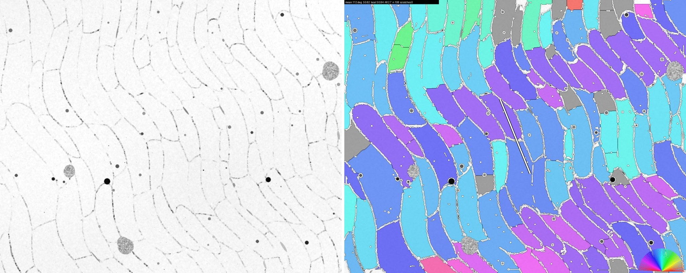
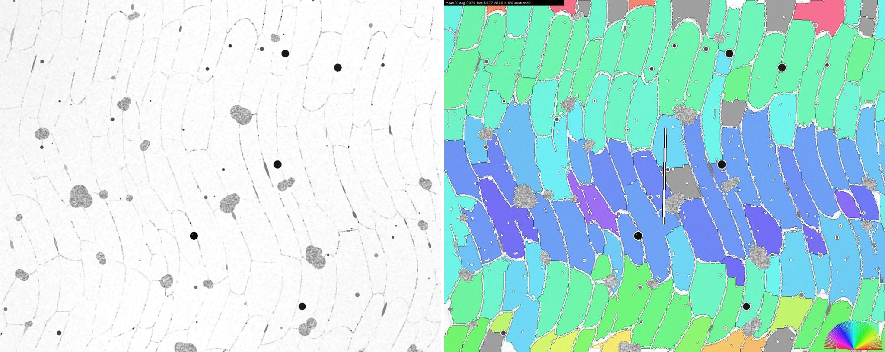
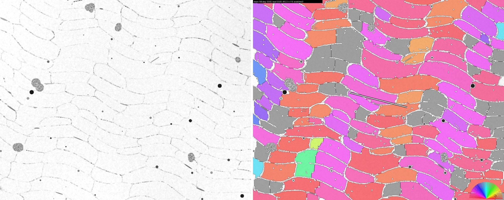
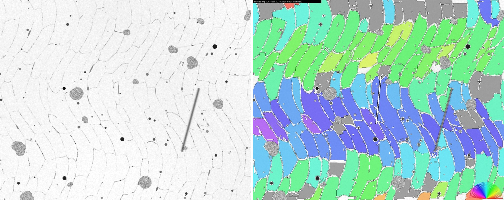
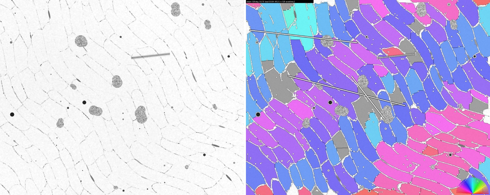
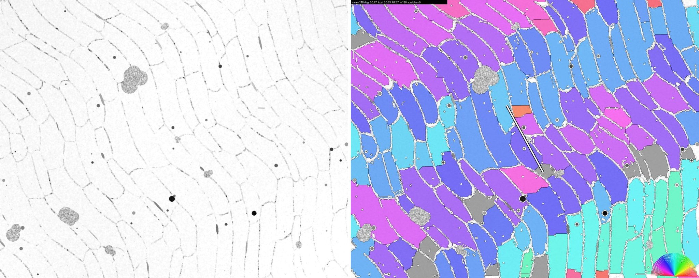
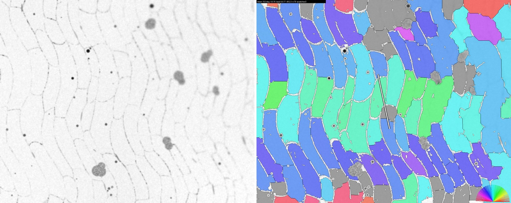
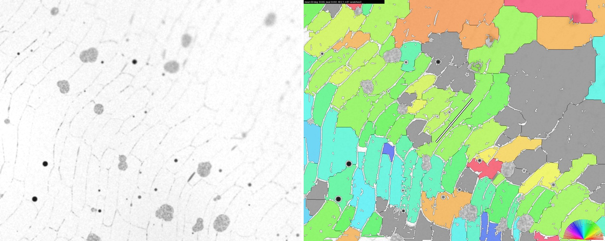
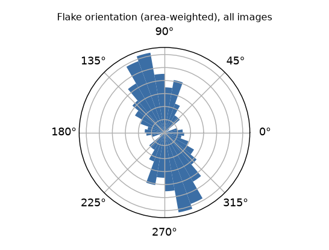
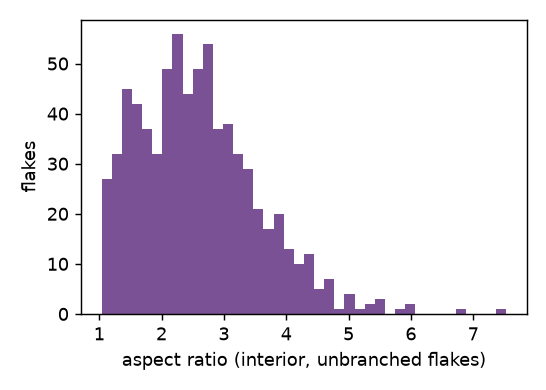

8 images; reading: boundaries (ambiguous profile; boundary reading by default (the agent review checks it)); flake width 68.5 px; code version cd3472549e.
| median | min | max | |
| order parameter S | 0.764 | 0.655 | 0.816 |
| local S (within colonies) | 0.822 | 0.765 | 0.838 |
| mean misalignment (deg) | 17.2 | 15 | 21.6 |
| median aspect ratio | 2.48 | 2.14 | 2.75 |
| median length (px) | 181 | 157 | 213 |
| median width (px) | 70.8 | 66.8 | 83.4 |
| flakes used per image | 120 | 79 | 128 |
Mean directions differ per image (axial; see the table): a set-level mean direction is only meaningful when the images were taken in the same specimen frame.
| image | mean dir (deg) | S [95 % CI] | local S | misalignment (deg) | AR [95 % CI] | flakes | scratches |
| sim_0 | 112 | 0.816 [0.78, 0.851] | 0.837 | 15 | 2.75 [2.61, 2.95] | 108 | 0 |
| sim_1 | 88.7 | 0.764 [0.705, 0.812] | 0.769 | 17.7 | 2.64 [2.44, 2.81] | 126 | 0 |
| sim_2 | 166 | 0.815 [0.756, 0.859] | 0.828 | 15.2 | 2.27 [2.12, 2.49] | 115 | 0 |
| sim_3 | 84.7 | 0.67 [0.626, 0.723] | 0.78 | 21.6 | 2.47 [2.33, 2.69] | 127 | 0 |
| sim_4 | 128 | 0.763 [0.711, 0.815] | 0.838 | 16.8 | 2.49 [2.13, 2.68] | 128 | 2 |
| sim_5 | 118 | 0.766 [0.712, 0.816] | 0.827 | 17.5 | 2.69 [2.38, 2.87] | 126 | 0 |
| sim_6 | 102 | 0.764 [0.685, 0.833] | 0.765 | 16.9 | 2.3 [2.14, 2.75] | 79 | 0 |
| sim_7 | 49.7 | 0.655 [0.548, 0.765] | 0.817 | 20.1 | 2.14 [1.88, 2.45] | 81 | 0 |
Twin: 9 code-generated images fitted to this set (realism ok: True; worst profile mismatch x1.00).
| twin images | params | mean direction err (deg) | S err | misalignment err (deg) | AR err | flake orientation err (deg) | flakes found | worst family ratio |
| dev | start | 0.593 | 0.0537 | 2.62 | 0.262 | 1.37 | 0.791 | 3.38 |
| holdout | start | 0.97 | 0.0525 | 1.85 | 0.271 | 1.1 | 0.792 | 4.56 |
| dev | chosen | 0.593 | 0.0537 | 2.62 | 0.262 | 1.37 | 0.791 | 3.38 |
| holdout | chosen | 0.97 | 0.0525 | 1.85 | 0.271 | 1.1 | 0.792 | 4.56 |
Search: 30 new configurations evaluated (38 incl. cached); objective 3.821 at the start, 3.821 chosen.
Warm start: none (no similar image set in the memory).
Central disk measured as is and turned by 30 deg: direction off by 0.29 deg, S by 0.008, aspect ratio by 0.018 (relative) (worst ratio to tolerance 0.36; <= 1 passes). Necessary, not sufficient.









